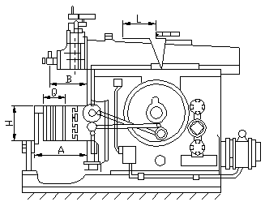
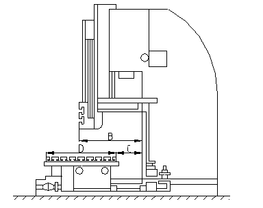

Строгальный станок - металлорежущий станок для обработки строгальными резцами горизонтальных, вертикальных и наклонных поверхностей с прямолинейными образующими.
Различают поперечно-строгальные и продольно-строгальные станки.
Главное движение строгального станка — прямолинейное возвратно-поступательное. У поперечно-строгального станка оно сообщается резцу, закрепленному в суппорте, у продольно-строгального станка — столу, на котором устанавливается изделие. Резание производится во время рабочего хода, затем следует холостой ход (с более высокой скоростью), при котором резец (или изделие) возвращается в первоначальное положение. Скорость главного движения остается постоянной у всех продольно-строгальных станков и поперечно-строгальных станков с гидравлическим приводом и меняется (от нуля до максимальной и вновь до нуля) у поперечно-строгальных станков с приводом от кулисно-кривошипного механизма. В конце каждого холостого хода осуществляется движение подачи (в поперечном направлении относительно направления главного движения). У поперечно-строгальных станков оно сообщается столу и закрепленному на нём изделию, у продольно-строгальных — резцу, закрепленному в суппорте. На поперечно-строгальных обрабатывают мелкие и средние изделия, на продольно-строгальных — относительно крупные изделия или одновременно несколько средних изделий, а также изделия с узкими длинными поверхностями, главным образом в индивидуальном и мелкосерийном производствах.
Из-за холостого хода невыгодно использование строгальных станков в крупносерийном и массовом производстве, где они заменяются. фрезерными, протяжными, шлифовальными станками.
Долбёжный станок - металлорежущий станок для обработки труднодоступных прямых или наклонных наружных и внутренних поверхностей, пазов и канавок любых профилей (главным образом несквозных, с малыми расстояниями для выхода инструмента). Главное движение — прямолинейное — осуществляется возвратно-поступательным перемещением в вертикальной плоскости ползуна с суппортом и закреплённым в нём долбёжным резцом, или долбяком. Привод ползуна механический или гидравлический. Движение подачи — прямолинейное или круговое — выполняется периодическими перемещениями стола, на котором закрепляют обрабатываемые изделия. Производительность долбежного станка ниже, чем фрезерного и протяжного. Применяют в единичном и мелкосерийном производствах.